Displacement forecast
This is a WIP. All this is going to change, for now we’re just
dumping things here. ## Forecast for 2025-08-11 00:00 UTC
There are 3 active named storms.
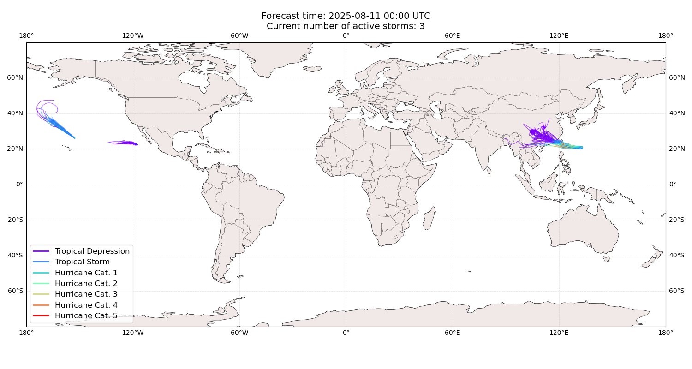
Active storm ensemble tracks
IVO All countries:
No forecast people exposed
Storm IVO is not forecast to affect people in All countries.
IVO All
countries: no forecast people displaced
Storm IVO is not forecast to displace people in All countries.
HENRIETTE
All countries: No forecast people exposed
Storm HENRIETTE is not forecast to affect people in All
countries.
HENRIETTE
All countries: no forecast people displaced
Storm HENRIETTE is not forecast to displace people in All
countries.
PODUL China: areas affected
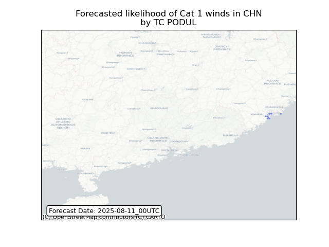 ## PODUL China:
people exposed
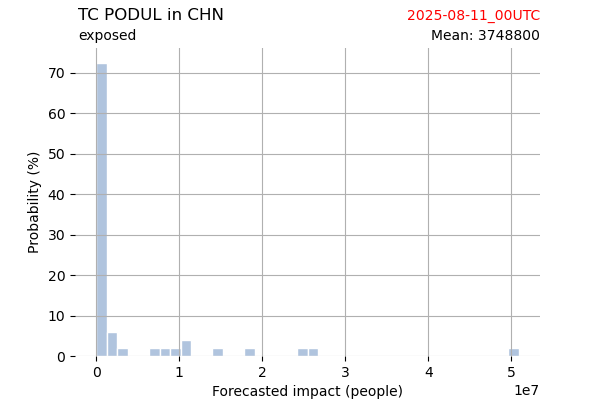
Histogram of possible exposed
population
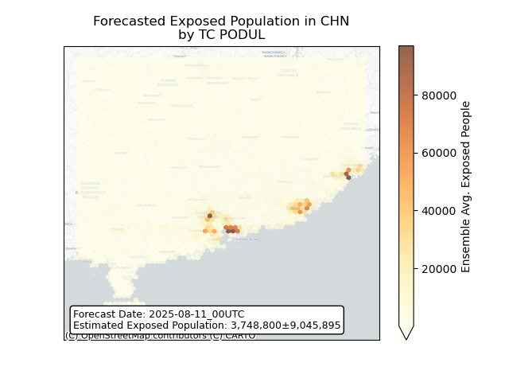
Map of possible exposed
population
PODUL China: people displaced
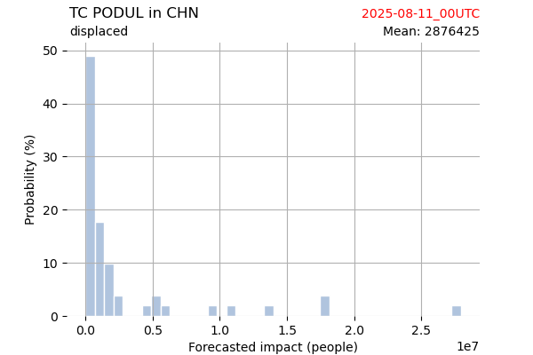
Histogram of possible displaced
population
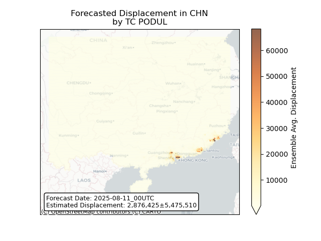
Map of possible displaced
population
PODUL Hong Kong: areas
affected
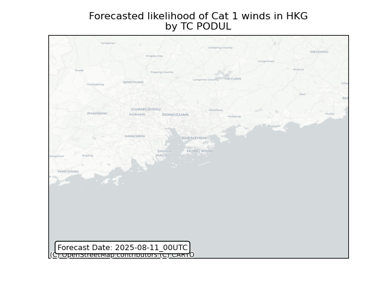 ## PODUL Hong
Kong: people exposed
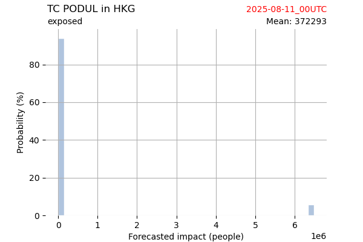
Histogram of possible exposed
population
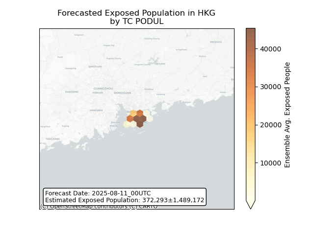
Map of possible exposed
population
PODUL Hong Kong: people
displaced
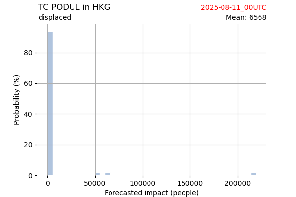
Histogram of possible displaced
population
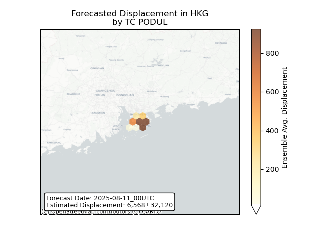
Map of possible displaced
population
PODUL Macao: areas affected
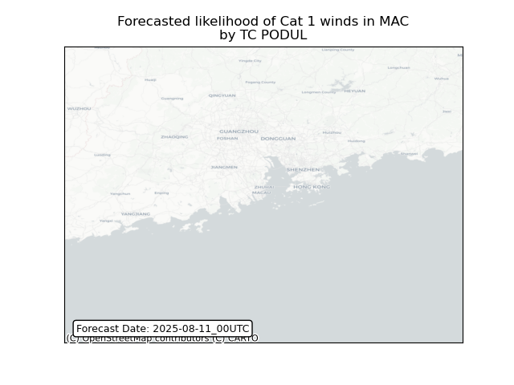 ## PODUL
Philippines: areas affected
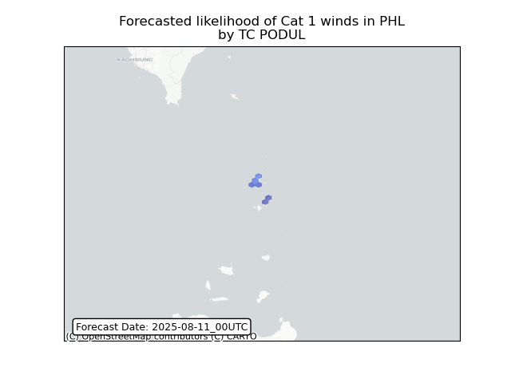 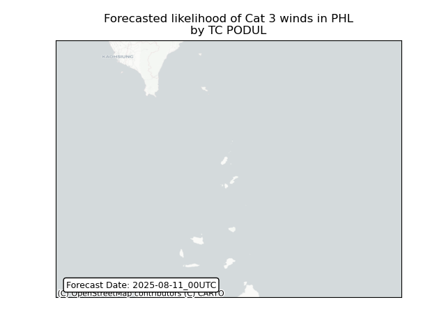
PODUL Philippines: people
exposed
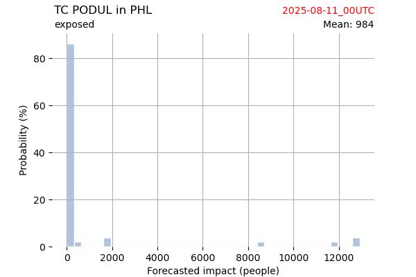
Histogram of possible exposed
population
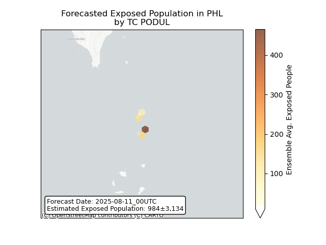
Map of possible exposed
population
PODUL Philippines: people
displaced
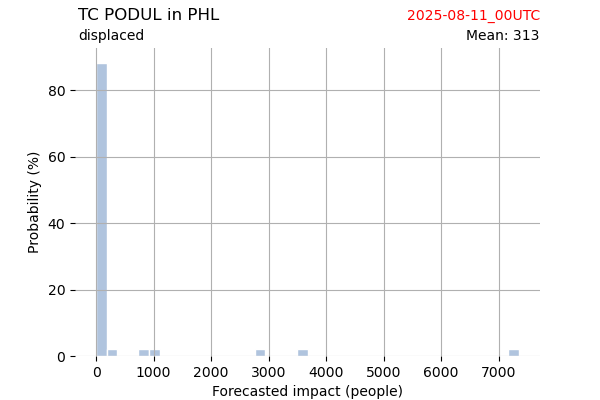
Histogram of possible displaced
population
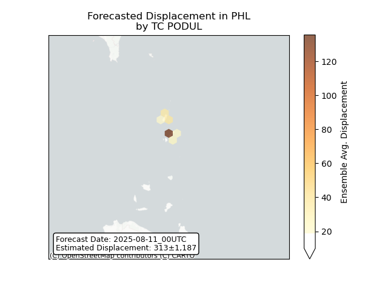
Map of possible displaced
population
PODUL Taiwan,
Province of China: areas affected
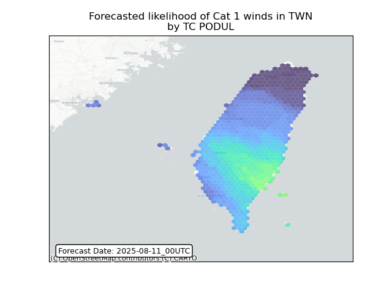 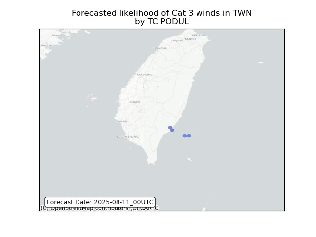
PODUL Taiwan,
Province of China: people exposed
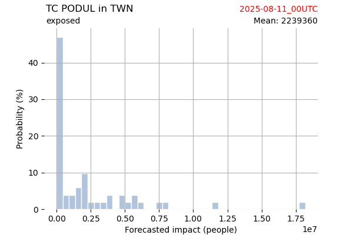
Histogram of possible exposed
population
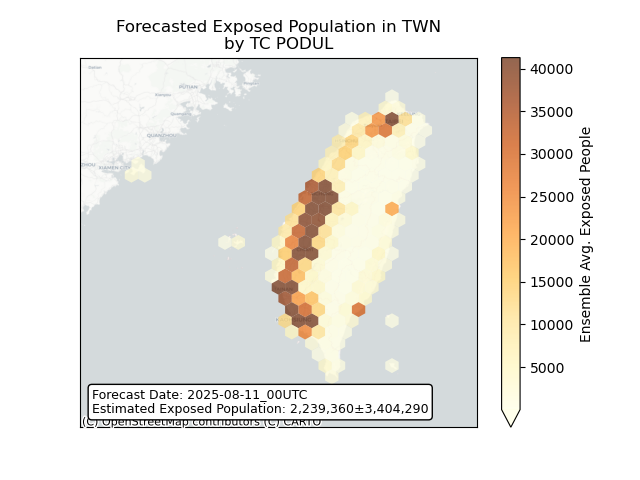
Map of possible exposed
population
PODUL Taiwan,
Province of China: people displaced
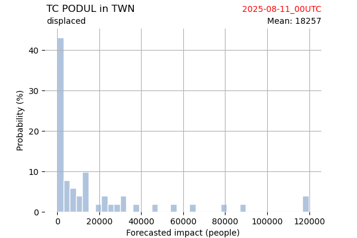
Histogram of possible displaced
population
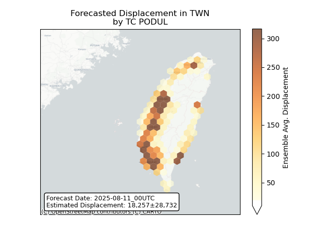
Map of possible displaced
population